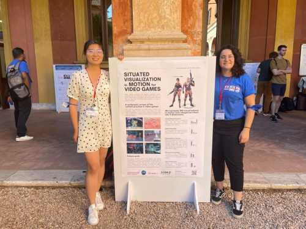
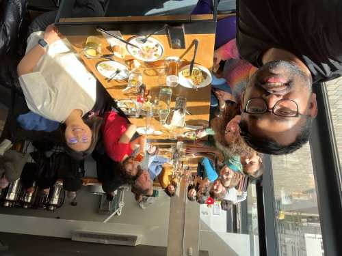
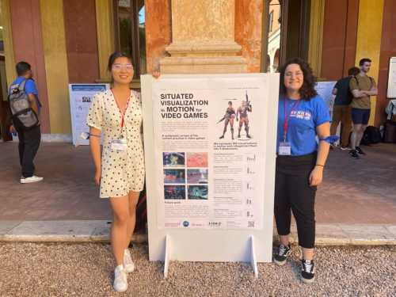
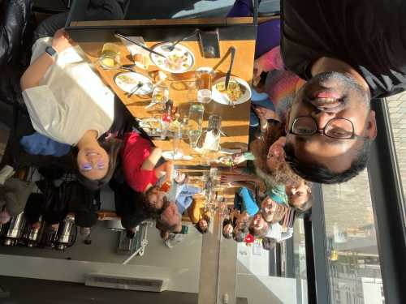

Activities
Organization
- 2025: Program Committee member for technical papers, International Symposium on Visual Information Communication and Interaction (VINCI), Dec. 1-3, Linz, Austria. Program Committee member for full papers and posters, IEEE Visualization & Visual Analytics (IEEE VIS), Nov. 2-7, Vienna, Austria. Program Committee member for short papers, ACM Symposium on Eye Tracking Research & Applications (ETRA), May 26-29, Tokyo, Japan.
- 2024: Co-organiser for the workshop on First-Person Visualizations for Outdoor Physical Activities, held as a part of IEEE VIS 2024, Oct. 13, Florida, U.S.
Review
Supervision
| Academic Year | Degree-granting Institution | Learning Program | Student Name (M/F) | Next Step |
|---|---|---|---|---|
| 2025/26 | University of Liverpool | MSc | Yiming Zhang 张益铭 | |
| 2025/26 | University of Liverpool | MSc | Shiyuan Jiang 姜世元 | |
| 2025/26 | University of Liverpool | MSc | Zehong Ye 叶泽鸿 | |
| 2025/26 | University of Liverpool | MSc | Yihan Dong 董一含 (F) | |
| 2025/26 | University of Liverpool | MSc | Fanhua Liu 刘凡华 | |
| 2024/26 | University of Liverpool | MRes | Yuzhu Chen 陈芋竹 (F) | |
| 2024/25 | Xi'an Jiatong-Liverpool University | BEng | Xing Wei 魏兴 | Master at University of Sydney |
| 2024/25 | Xi'an Jiatong-Liverpool University | BEng | Yuming Zhang 张煜明 | Work at Industry |
| 2024/25 | Xi'an Jiatong-Liverpool University | BEng | Yongxuan Teng 滕永轩 | Work at Industry |
| 2024/25 | Xi'an Jiatong-Liverpool University | BEng | Dingkang Yang 杨定康 | Master at University of Sydney |
| 2021/22 | University Paris-Saclay | Master | Federica Bucchieri (F) | Work at Industry |
Teaching
-
Xi'an Jiaotong-Liverpool University:
CPT210 - Microprocessor System (Module Leader, ~540 students, undergraduate level): Lectures & Tutorials on ARM.
SAT006 - Foundations of Computer Science and Engineering (~710 students, undergraduate level): Lectures & Tutorials on computer science.
-
Interactive Information Visualization (~50 students, graduate level): Lectures on "Visualization with Time Series Data" and "Animated Visualization" & Tutorials on "Coding with P5.js", "Implementation by D3.js", and "Sketching for Ideation".

 


